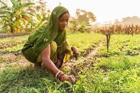

Agriculture Site
Home
Issues
Solutions
Donate
About
Contact
Solutions in Agriculture
Innovative Solutions for Farmers
Sustainable Farming:
Techniques that protect the environment and improve yield.
Water Management:
Efficient irrigation systems like drip and sprinkler irrigation.
Market Access:
Platforms that connect farmers directly to buyers.
Technology Integration:
Use of drones, AI, and data analytics in farming.
Government Policies:
Supportive policies and subsidies for farmers.
